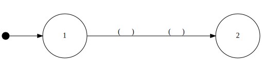
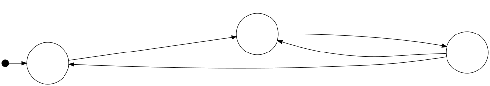
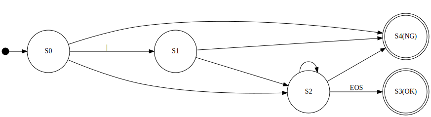

### 構造化プログラミング入門 #### 第１回 間違いだらけの構造化プログラミング ------ #### USP友の会会員 鳥海 秀一 --- ### 注意 ------ #### シェル芸とは全く関係がありません --- ### 目的 ------ #### ハーラン・ミルズが上書きした #### 構造化プログラミングの定義を #### 再上書きすること --- ### 希望 ------ #### 本講義の内容を咀嚼して拡散して #### いただけると嬉しいです --- ### 謝辞 ------ #### 貴重な場を提供いただいたシェル芸 #### 勉強会の皆様に感謝いたします --- ### 講師 ------ * 名前 鳥海秀一 * 年齢 57歳 * 職業 プログラマ * 経歴 18歳のときにポケコンでプログラミングを始めて以来、約40年のプログラミングマニア --- ### 講義の予定 ------ * 第１回 間違いだらけの構造化プログラミング * 第２回 ジャクソン流構造化プログラミング * 第３回 非構造化プログラミングの可能性 --- #### 第１回 間違いだらけの構造化プログラミング --- ### 間違い その１ ------ * 構造化プログラミングは構造化定理を基礎とした主張である --- ### 正解 その１ ------ * 構造化定理とはハーラン・ミルズが自身が開発したクリームルーム手法の宣伝のために、ベームとヤコピーニの証明につけた詐欺的呼称 * ダイクストラの構造化プログラミングと構造化定理は無関係 ------ * 参考 [翻訳：構造化プログラミングを最初に提唱した文書](https://calculator-cafe.com/readings/Structured_programming/Structured_programming.html) --- ### 構造化プログラミングは ### 何を主張しているのか？ --- ### 構造化プログラミングの主張は goto だらけのプログラムを書くと、すぐに理解できます ------ * 参考 [Gotoサンの話。結局のところ「goto禁止」はどういう話だったのか？](https://eel3.hatenablog.com/entry/20150221/1424445453) --- ### 問題 ------ #### Gotoだらけのプログラムを書くには #### 何を題材とすれば良いのか？ --- ### 解答 ------ #### 状態遷移図で表現された #### ロジックを題材とすれば良い --- ### 状態遷移図とは ------ * 対象がどのような状態を持ち、どのような条件や出来事（イベント）によりそれらの間を遷移するかを一覧に表した図 --- ### 状態遷移図の書き方 ------  --- ### 状態遷移図の例 ------  --- ### 問題 ------ #### 状態遷移図を書くには #### 何を題材とすれば良いのか？ --- ### 解答 ------ #### 字句解析を題材とすれば良い --- ### 字句解析とは ------ * ある言語で書かれた文について、文字の並びを解析し、言語的に意味のある最小の単位（トークン）に分解する処理のこと。自然言語処理やプログラミング言語のコンパイルなどで行われる --- ### 本日は、整数判定を題材とします --- ### 整数とは ------ * 最初に符号（＋ or -）があって、それに続けて１文字以上の数字（０〜９）が続く文字列。但し、符号は省略される場合がある。 --- ### 整数判定の状態遷移図 ------  --- ### Gotoの学習に使えない言語 * Java * JavaScript * Ruby * Python * Kotlin * Swift * Rust --- ### Gotoの学習に使える言語 * C/C++ * C# * Unixシェル * Perl * PHP(5.3から) * Go * Julia --- ### プログラムを完成させてください -------- https://github.com/umidori/shellgei-57th-am/tree/main/is_int/still_working --- ### Gotoだらけのプログラム ### 見づらいと感じますか？ --- ### 簡単な操作で見づらくできます --- ### 問題 ------ * どうしてテキストの位置を変えただけで見やすさが変わるのか？ --- ### 解答 ------ * 人は何が書かれているかだけでなく、それがどこに書かれているかからも情報を取得する（むしろ内容よりも前に、位置から情報を取得する） * テキストが書かれている位置が人にとって自然な位置にあると人は安心する --- ### 問題 ------ * プログラムの場合、テキストの自然な位置とは何か？ --- ### 解答 ------ * ダイクストラの論文に書いてあります * https://github.com/umidori/shellgei-57th-am/tree/main/Paper --- ### 解答 ------ * プログラムのテキストにおける進行を計算の進行と一致させる --- ### ダイクストラのアドバイスに則り ### 先ほどのプログラムを改良します --- ### 次に機械的にgoto文を取り除くと ### どうなるか実演します --- ### 間違い その２ ------ * ダイクストラはすべての高級プログラミング言語からgoto文を廃止すべきだと主張している --- ### 正解 その２ ------ * 主張しているのは確かだが、ダイクストラが論じていることからこの結論は出てこない * 機械的なgotoの除去に反対していることと矛盾した主張となっている --- ### 間違い その３ ------ * 構造化プログラミングは制御の流れに関する主張である --- ### 正解 その３ ------ * 構造化プログラミングは次の２つの異なる部分から構成された主張である 1. 計算の進行とプログラムのテキストの進行を一致させるとよい 1. 変数とそれを操作する関数をひとまとめにした仮想的な機械の集合としてプログラムを構成するとよい * ダイクストラは主として後者に対して構造化プログラミングと名づけたと思われる --- ### 間違い その３の影響 ------ * 2の主張は後にオブジェクト指向の議論へと発展する * 2の主張は無視されため、オブジェクト指向はよりセンセーショナルなものとなった --- ### ご視聴ありがとうござました